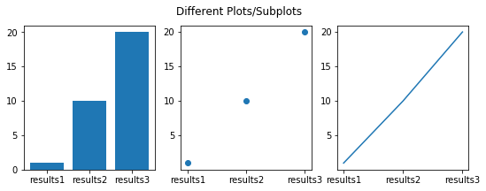
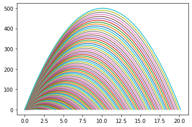
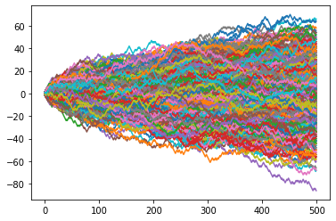

Contents
import fibonacci as fb
---------------------------------------------------------------------------
ModuleNotFoundError Traceback (most recent call last)
Input In [1], in <cell line: 1>()
----> 1 import fibonacci as fb
ModuleNotFoundError: No module named 'fibonacci'
fb.fibo_range(11)
([0, 1, 1, 2, 3, 5, 8, 13, 21, 34, 55], 55)
import this
The Zen of Python, by Tim Peters
Beautiful is better than ugly.
Explicit is better than implicit.
Simple is better than complex.
Complex is better than complicated.
Flat is better than nested.
Sparse is better than dense.
Readability counts.
Special cases aren't special enough to break the rules.
Although practicality beats purity.
Errors should never pass silently.
Unless explicitly silenced.
In the face of ambiguity, refuse the temptation to guess.
There should be one-- and preferably only one --obvious way to do it.
Although that way may not be obvious at first unless you're Dutch.
Now is better than never.
Although never is often better than *right* now.
If the implementation is hard to explain, it's a bad idea.
If the implementation is easy to explain, it may be a good idea.
Namespaces are one honking great idea -- let's do more of those!
import antigravity
import random #importing the random library
import numpy as np # importing numpy lib as "np"
import matplotlib.pyplot as plt #importing a sublibrary from matplotlib
a = [[1,2,3],
[2,3,4],
[5,6,7],
[1,1,1]]
b = [[1,2,3,4],
[5,6,7,8],
[9,10,11,12]]
a
[[1, 2, 3], [2, 3, 4], [5, 6, 7], [1, 1, 1]]
n = 10
for i in range(n):
print(i)
0
1
2
3
4
5
6
7
8
9
def matmul(A,B):
"""Matrix Multiplication AxB"""
rows_out = len(A)
cols_out = len(B[0])
#zero matrix for mat mul
out = [[0 for col in range(cols_out)] for row in range(rows_out)]
#matrix multiplication
for i in range(rows_out):
for j in range(cols_out):
for k in range(len(B)):
out[i][j] += A[i][k]*B[k][j] # a += b+c == a = a+b+c
return out
matmul(a,b)
[[38, 44, 50, 56], [53, 62, 71, 80], [98, 116, 134, 152], [15, 18, 21, 24]]
test_out = [[0 for col in range(5)] for row in range(4)]
print(test_out)
[[0, 0, 0, 0, 0], [0, 0, 0, 0, 0], [0, 0, 0, 0, 0], [0, 0, 0, 0, 0]]
def random_matrix(m,n):
out = [[random.random() for col in range(n)] for row in range(m)]
return out
random_matrix(3,4)
[[0.0040426964984687785,
0.9408170801896498,
0.9302664769175191,
0.576164481593782],
[0.270587207847127,
0.3351318978195168,
0.6739620309183528,
0.043539460984553524],
[0.7241358656035206,
0.5519190674898994,
0.016940151434663764,
0.9650390073444276]]
rand_a = random_matrix(400,300)
rand_b = random_matrix(300,400)
%%time
#Comment
rand_res = matmul(rand_a,rand_b)
Wall time: 10.7 s
a_list = [2,3,4,5]
b_list = [6,7,8,9]
c_list = a_list + b_list
print(c_list)
print(type(a_list))
# test_list = [1, 2, 3.14]
[2, 3, 4, 5, 6, 7, 8, 9]
<class 'list'>
a_np = np.array(a_list) #import numpy as np
b_np = np.array(b_list)
c_np = a_np + b_np
print(c_np)
print(type(a_np))
[ 8 10 12 14]
<class 'numpy.ndarray'>
d_np = a_np * 3
e_np = b_np * 3.14
print(d_np)
print(e_np)
[ 6 9 12 15]
[18.84 21.98 25.12 28.26]
x_np = np.arange(100) # linear sequence of numbers similar to range()
y_np = x_np**0.5
z_np = x_np**0.3
#z_np
np.array([range(i,i+3) for i in [1,2,3]])
array([[1, 2, 3],
[2, 3, 4],
[3, 4, 5]])
n_parr = np.arange(10)
print(n_parr)
[0 1 2 3 4 5 6 7 8 9]
a_reshape = n_parr.reshape?
a_reshape = n_parr.reshape(2,5)
a_reshape
array([[0, 1, 2, 3, 4],
[5, 6, 7, 8, 9]])
a_zeros = np.zeros((3,3))
a_zeros
array([[0., 0., 0.],
[0., 0., 0.],
[0., 0., 0.]])
a_identity = np.eye(5)
a_identity
array([[1., 0., 0., 0., 0.],
[0., 1., 0., 0., 0.],
[0., 0., 1., 0., 0.],
[0., 0., 0., 1., 0.],
[0., 0., 0., 0., 1.]])
a_reshape.T
array([[0, 5],
[1, 6],
[2, 7],
[3, 8],
[4, 9]])
np.lookfor("eigen")
Search results for 'eigen'
--------------------------
numpy.linalg.eig
Compute the eigenvalues and right eigenvectors of a square array.
numpy.linalg.eigh
Return the eigenvalues and eigenvectors of a complex Hermitian
numpy.linalg.eigvals
Compute the eigenvalues of a general matrix.
numpy.linalg.eigvalsh
Compute the eigenvalues of a complex Hermitian or real symmetric matrix.
numpy.roots
Return the roots of a polynomial with coefficients given in p.
numpy.linalg.svd
Singular Value Decomposition.
numpy.linalg._umath_linalg.eig
eig on the last two dimension and broadcast to the rest.
numpy.polynomial.Hermite._roots
Compute the roots of a Hermite series.
numpy.polynomial.HermiteE._roots
Compute the roots of a HermiteE series.
numpy.polynomial.Laguerre._roots
Compute the roots of a Laguerre series.
numpy.polynomial.Legendre._roots
Compute the roots of a Legendre series.
numpy.polynomial.Chebyshev._roots
Compute the roots of a Chebyshev series.
numpy.linalg._umath_linalg.eigh_lo
eigh on the last two dimension and broadcast to the rest, using lower triangle
numpy.linalg._umath_linalg.eigh_up
eigh on the last two dimension and broadcast to the rest, using upper triangle.
numpy.linalg._umath_linalg.eigvals
eigvals on the last two dimension and broadcast to the rest.
numpy.polynomial.Polynomial._roots
Compute the roots of a polynomial.
numpy.linalg._umath_linalg.eigvalsh_lo
eigh on the last two dimension and broadcast to the rest, using lower triangle.
numpy.linalg._umath_linalg.eigvalsh_up
eigvalsh on the last two dimension and broadcast to the rest, using upper triangle.
numpy.polynomial.hermite.hermcompanion
Return the scaled companion matrix of c.
numpy.polynomial.legendre.legcompanion
Return the scaled companion matrix of c.
numpy.polynomial.chebyshev.chebcompanion
Return the scaled companion matrix of c.
numpy.polynomial.hermite_e.hermecompanion
Return the scaled companion matrix of c.
numpy.random.Generator.multivariate_normal
Draw random samples from a multivariate normal distribution.
np.matmul?
np.random.randint(0,10,(3,3))
array([[6, 4, 3],
[4, 1, 8],
[6, 8, 7]])
rand_npa = np.random.randint(0,4,120000).reshape(400,300)
##rand_npa = np.random.randint(0,4,(300,200))
rand_npb = np.random.randint(0,4,120000).reshape(300,400)
%%time
x1 = matmul(rand_npa,rand_npb)
Wall time: 1min 6s
%%time
x2 = np.matmul(rand_npa,rand_npb)
Wall time: 100 ms
x1-x2
array([[0, 0, 0, ..., 0, 0, 0],
[0, 0, 0, ..., 0, 0, 0],
[0, 0, 0, ..., 0, 0, 0],
...,
[0, 0, 0, ..., 0, 0, 0],
[0, 0, 0, ..., 0, 0, 0],
[0, 0, 0, ..., 0, 0, 0]])
t_mat = np.arange(20).reshape(4,5)
t_mat
array([[ 0, 1, 2, 3, 4],
[ 5, 6, 7, 8, 9],
[10, 11, 12, 13, 14],
[15, 16, 17, 18, 19]])
#Slicing and Indexing
#t_mat[0] --> I get the first row
#t_mat[1,1] #I get one element
#t_mat[1:3,1:3] #2-d section from overall matrix
t_mat[:2,:2]
array([[0, 1],
[5, 6]])
#Universal Functions
np.sqrt(t_mat)
array([[0. , 1. , 1.41421356, 1.73205081, 2. ],
[2.23606798, 2.44948974, 2.64575131, 2.82842712, 3. ],
[3.16227766, 3.31662479, 3.46410162, 3.60555128, 3.74165739],
[3.87298335, 4. , 4.12310563, 4.24264069, 4.35889894]])
np.sin(t_mat)
array([[ 0. , 0.84147098, 0.90929743, 0.14112001, -0.7568025 ],
[-0.95892427, -0.2794155 , 0.6569866 , 0.98935825, 0.41211849],
[-0.54402111, -0.99999021, -0.53657292, 0.42016704, 0.99060736],
[ 0.65028784, -0.28790332, -0.96139749, -0.75098725, 0.14987721]])
#Boolean Operations
print(t_mat)
((t_mat % 2) == 0) & (np.sqrt(t_mat)< 4)
[[ 0 1 2 3 4]
[ 5 6 7 8 9]
[10 11 12 13 14]
[15 16 17 18 19]]
array([[ True, False, True, False, True],
[False, True, False, True, False],
[ True, False, True, False, True],
[False, False, False, False, False]])
#hint: np.loadtxt?
#x_np = np.arange(100)
#y_np = x_np**0.5
#z_np = x_np**0.3
plt.plot(x_np,y_np)
plt.plot(x_np,z_np)
[<matplotlib.lines.Line2D at 0x248b6cbbec8>]
mat2 = np.random.randint(-255,255,65025).reshape(255,255)
plt.matshow(mat2)
<matplotlib.image.AxesImage at 0x248b718ad88>
plt.plot([1,2,3,4])
plt.ylabel('integers')
Text(0, 0.5, 'integers')
plt.plot([1,2,3,4],[1,4,9,16], 'r*')
plt.xlabel("x")
plt.ylabel("x^2")
Text(0, 0.5, 'x^2')
plt.plot?
plt.bar([1,2,3,4],[2,8,10,11])
#plt.bar?
<BarContainer object of 4 artists>
#plt.scatter([1,2,3,4],[9,6,8,39])
plt.scatter(np.arange(10),np.random.randint(0,5,10))
#plt.scatter?
<matplotlib.collections.PathCollection at 0x248b91c7888>
#Subplots
names = ["results1","results2","results3"]
values = [1,10,20]
plt.figure(figsize=(9,3)) #Modify the values and see the results
plt.subplot(131)
plt.bar(names,values)
plt.subplot(132)
plt.scatter(names,values)
plt.subplot(133)
plt.plot(names,values)
plt.suptitle("Different Plots/Subplots")
plt.show()

def height(v0):
g = 9.81
t = (2*v0)/g
x_range = np.linspace(0,t,100) #creates and evenly spaced np array
h = []
for i in x_range:
h.append(v0*i - 0.5*g*(i**2)) #PEMDAS
plt.plot(x_range,h)
for v in range(100):
height(v)

#Random walk experiment
#Flip a coin 100 times to determine path Hint: range
#If heads, one step forward, if tails, one step backward Hint: random.randint
#Plot each random walk
#Plot for a range of repeat experiments
def random_walk(num_steps):
walk = np.zeros(num_steps)
for step in range(len(walk)):
coin_flip_result = np.random.randint(0,2)
#print(walk[step-1]) ??
if coin_flip_result == 0:
walk[step] = walk[step-1] + 1
else:
walk[step] = walk[step-1] - 1
plt.plot(walk)
walk_range = 1000
for walk in range(walk_range):
random_walk(500)

n = 10
for i in range(10):
print(i)
print(i)
0
1
2
3
4
5
6
7
8
9
9